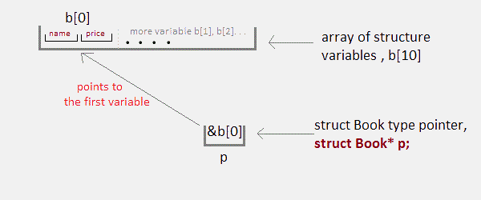

Pointer to Structure Array
Like we have array of integers, array of pointers etc, we can also have array of structure variables. And to use the array of structure variables efficiently, we use pointers of structure type. We can also have pointer to a single structure variable, but it is mostly used when we are dealing with array of structure variables.
#include <stdio.h>
struct Book
{
char name[10];
int price;
}
int main()
{
struct Book a; //Single structure variable
struct Book* ptr; //Pointer of Structure type
ptr = &a;
struct Book b[10]; //Array of structure variables
struct Book* p; //Pointer of Structure type
p = &b;
return 0;
}
Accessing Structure Members with Pointer
To access members of structure using the structure variable, we used the dot . operator. But when we have a pointer of structure type, we use arrow -> to access structure members.
#include <stdio.h>
struct my_structure {
char name[20];
int number;
int rank;
};
int main()
{
struct my_structure variable = {"HelloWorld", 1, 1};
struct my_structure *ptr;
ptr = &variable;
printf("NAME: %s\n", ptr->name);
printf("NUMBER: %d\n", ptr->number);
printf("RANK: %d", ptr->rank);
return 0;
}NAME: HelloWorld NUMBER: 1 RANK: 1